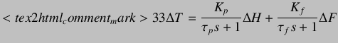
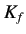
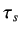
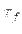
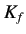
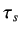
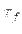

Next: The Approach Followed Up: Theory Previous: Theory
|  | (9.1) |
 T: Temperature change
T: Temperature change
 F: Fan input change
F: Fan input change
 H: Heater input change
H: Heater input change
The values of  , ,  and  can be found by conducting step test experiments. Using these values,
the parameters (
, ,  and  can be found by conducting step test experiments. Using these values,
the parameters ( ,
,  and
and  ) of the PID controller can be defined using methods like
Direct Synthesis of Ziegler Nichols Tuning.
However, when the apparatus is used in over a large range of temperature, the values of the plant parameters
(
) of the PID controller can be defined using methods like
Direct Synthesis of Ziegler Nichols Tuning.
However, when the apparatus is used in over a large range of temperature, the values of the plant parameters
( , , and ) may change. The new values would give new values of PID controller parameters.
However, in a conventional PID controlled system, the parameters
, , and ) may change. The new values would give new values of PID controller parameters.
However, in a conventional PID controlled system, the parameters  ,
, and
and  are defined beforehand and are
not changed when the system is working. Therefore, we might have a situation in which the PID controller is working with
unsuitable values that may not give the desired performance.Therefore, it becomes necessary to change or update the values of
the PID parameters so that the plant gives the optimum performance.
are defined beforehand and are
not changed when the system is working. Therefore, we might have a situation in which the PID controller is working with
unsuitable values that may not give the desired performance.Therefore, it becomes necessary to change or update the values of
the PID parameters so that the plant gives the optimum performance.